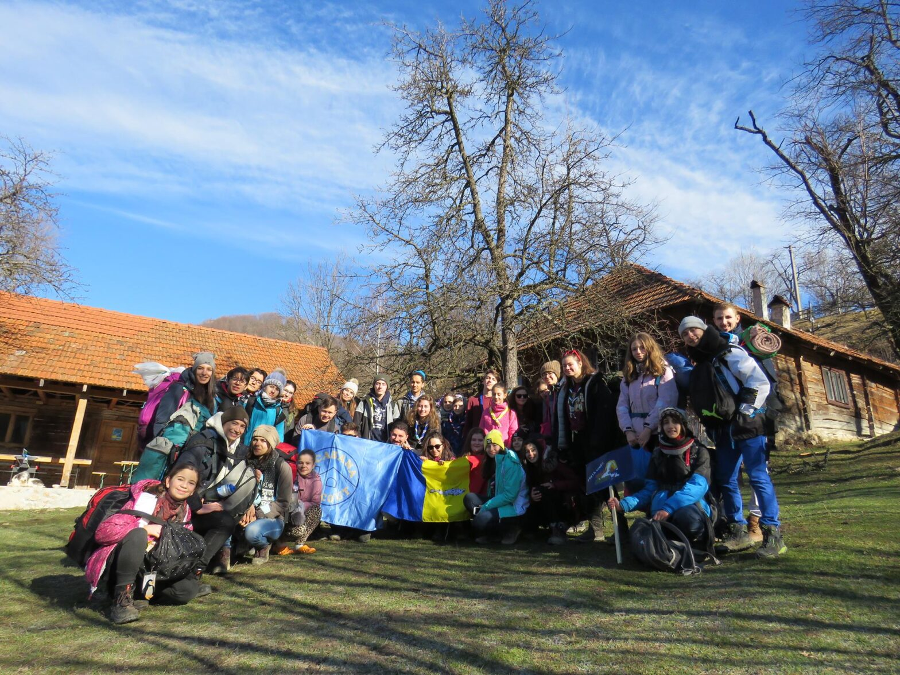

Amintiri din Campul de Iarnă Cioclovina 2018

Trei dintre eXploratorii care au participat la Campul de Iarnă de anul acesta ne-au împărtăşit amintirile lor din prima ieşire de acest gen de care au avut parte în centrul nostru local. Aida, Filip şi Andreea (Pitica) s-au întins la poveşti şi iată ce a ieşit:
AIDA: E ora 8 dimineața și o bunicuță simpatică care vinde ghiocei în apropierea stației de metrou Politehnica încearcă să îi convingă pe toți cercetașii de sex masculin, de la cel mai mic temerar până la cel mai mare lider să cumpere câte un buchețel, unul pentru mami, unul pentru soră, unul pentru prietenă, transmițându-ne câte un pic din energia ei fiecăruia dintre noi. Ce habar nu aveam atunci e ca urma să avem nevoie de fiecare dram de energie mai târziu.
După ce și-a făcut apariția și ultimul dintre cei întârziați, ne-am împărţit, unii dintre noi în dubă, alții în mașini și am pornit la drum, cu voie bună, cu muzică în boxe şi cu speranța ca urma să înceapă o experiență de neuitat.
După ore de mers cu pauze prin benzinării, am oprit în sfârșit cu toții, majoritatea dintre noi crezând ca am ajuns, deși opriserăm lângă o construcţie foarte micuță, în care am fi intrat cu greu toți, pentru ca apoi să auzim că mai avem de mers încă douăzeci și cinci de minute până la cabana cercetășească unde urma să stăm, așa că am pornit pe drumul de munte pavat cu noroi şi zăpadă, ajutându-ne unii pe alții să distribuim egal greutatea pe care o căra fiecare, lucru care pe mine personal m-a impresionat plăcut.
Cele douăzeci şi cinci de minute s-au transformat in aproximativ patruzeci, dar când în sfârşit am ajuns, pe înserate, am simțit cu toții cred că s-a meritat drumul. Momentul în care am intrat pe ușa cabanei poate fi marcat drept momentul în care am intrat într-o altă lume, una călduroasă, cu oameni minunați, cu ceai cald de fructe de pădure (cu muuult zahăr) cu foarte simpaticul şi descurcărețul domn Gherman care ne-a îndrumat tot timpul petrecut la Cioclovina și cu multe cântece la chitară.
În prima zi am învățat următoarele lucruri:
- O bancă pe care să poți să te așezi e mai greu de construit decât pare, dar nimic nu este imposibil!
- Poți să pornești în hike chiar dacă ai febră musculară din ziua precedentă!
- E cel mai bine să nu te bazezi că îți aduci bine aminte că nu ai băut din sticla de apă peste noapte, pentru că e foarte posibil ca memoria să îți joace feste și să te trezești cu jumătate de sticlă de apă la tine chiar dacă POȚI SĂ JURI CĂ NU AI BAUT; umpleți-vă sticlele înainte să plecați, copii!
- Dacă nu îți place să cari și ți s-a întâmplat să te gândești “hm ce ar fi să nu îmi iau geaca pentru că o să mergem în continuu și cel mai probabil mi s-ar face cald și ar trebui să o car după” s-ar putea să îți mulțumești mai încolo!
- Cum se lansează (puțin eșuat) o rachetă cu aer comprimat.
În a doua zi însă, am învățat că nu toate zilele la Cioclovina sunt la fel și că uneori e mai bine să fi precaut. A doua zi s-a constituit din încă un hike, mai lung decât cel anterior, pe un traseu superb cu peisaje despre care e puțin spus că îți tăiau respirația. Cascade, păduri, peșteri, văi adânci, lansarea (reușită de data asta) a rachetei întitulată “RUGĂCIUNEA” și menită să alunge blestemul ce acoperea două regate și doi îndrăgostiți și cățelușul de la cabană care ne-a urmat peste tot, dar mai ales lecția pe care am primit-o eu (dacă ieri timp de două ore nu ți-a fost frig fără geacă nu înseamnă că azi când stai cel puțin 6 ore— s-au transformat în 8 — nu o să-ți fie) au făcut ziua a doua una de neuitat. După ce am ajuns înapoi la cabană, am mâncat şi ne-am așezat pentru un joc intens și obositor însă extrem de distractiv de Vârcolacii la care au participat toate patrulele, ceea ce pe mine m-a ajutat să îi cunosc pe toți mai bine.
Uitându-mă înapoi, nu pot decât să îmi doresc să fi durat mai mult și să spun cu certitudine că îmi va rămâne mereu în amintire și mai ales în suflet, în special cântecul de poftă bună al domnului Gherman, care sună cam așa:
Hrum Miam Miam Miam Miam Miam Miam
Hrum Miam Miam Miam Miam
Hrum Miam Miam Miam Miam Miam Miam
Hrum Miam Miam Miam Miam
Hrum
Hrum
Poftă,
Poftă BUNĂ!!
FILIP: A fost un camp de iarnă foarte frumos! Încă de la început eram bucuros că o să merg în prima mea școală de iarnă împreună cu cercetașii. De dimineață, la ora 8 am ajuns la locul de întâlnire, parcarea de la stația de metrou Politehnica. Am ajuns, i-am salutat pe cei ce ajunseseră deja. După ceva timp, Adi ne-a repartizat cum aveam să stăm în mașini. Noroc că am avut și o boxa portabilă cu noi. Drumul de cică 7 ore a trecut foarte rapid, după mine drumul a durat cam 10 minute. Când eram aproape, a trebuit să oprim și să mergem pe jos până la cabană din cauza mocirlei și a noroiului. Când am coborât din mașină ploua și era destul de frig. Ne-a întâmpinat un domn foarte de treaba și glumeț pe nume Gherman. Drumul până la cabană a fost destul de greu după mine deoarece a trebuit să urcăm un deal destul de înalt cu ditamai ghiozdanul în spate plus și mâncare cumpărată.
Ajungând acolo observ 4 căsuțe foarte interesante și frumoase. În următoarea zi a trebuit să facem o bancă din bețe și sfoară, ceea ce m-a uimit destul de tare dar după ce am reușit am fost tare bucuros că banca a rezistat greutății mele. După aceea am făcut un hike până pe vf. Ţâfla, unde am lansat o “rachetă”.
Următoarea zi ne-am trezit de dimineață pentru hike-ul cel mare! Am întâlnit niște priveliști uimitoare, mai ales în peștera cu formațiuni de gheață chiar dacă una s-a rupt. Pe drumul de întoarcere, ne-am oprit să ne odihnim și să admirăm cum zboară o drona și cum lansăm a două încercare a “rachetei”. Între timp Gherman plecase cu câțiva cercetași. Se lasă noaptea și noi nu prea știam unde suntem doar cu ajutorul unui antene cu un punct roșu ce era aproape de cabană noastră am reușit. Ne-am ghidat într-un fel după acel punct roșu și am reușit să ajungem la cabană. În fiecare seară am stat cu Gherman și am cântat la chitară diferite melodii foarte frumoase sau dânsul ne-a povestit diferite aventuri din viață lui.
Apoi, în următoarea zi, ne-am dus să cumpărăm niște brânză și șunculiță adevărată. Apoi ne-am întors la cabană să ne luăm bagajele și să ne luăm la revedere de la Gherman. Am coborât la mașini, am plecat pe la 11 dimineață și am ajuns pe la 8 seară, dar din nou drumul a părut foarte scurt!
A fost o școală de iarnă foarte frumoasă!
PITICA: 3 februarie. La ora 8:00 trebuie să ne întâlnim în parcarea aflată la ieşirea de la metrou, mai precis Politehnica. Un rucsac greu în spate şi o aventură nouă ce ne aşteaptă. O tanti stă la povești cu noi şi vinde ghiocei, încercând să abordeze orice cercetaş care apărea. Se face împărțirea pe mașini şi de data asta ni s-a spus că nu avem voie cu democrație.
Mi-a lipsit veșnicul personal de data asta, drumul a fost foarte lung, iar aşteptarea din automobil necesită răbdare.
Când am ajuns la Cioclo, mulți dintre noi nu am ştiut că riscăm să rămânem fără semnal. Noroc cu cei care sunt pe Orange că ne-au ajutat să comunicăm cu părinţii (Mulțumim, Sabina!) Se pare că ne aşteaptă cineva pentru a ne conduce la Cabana. Uite aşa am făcut cunoştinţă cu Gherman, cel care întreține casa. Plouă, avem de cărat mâncarea şi din fericire drumul de parcurs e scurt, problema principală fiind gheața.
Am ajuns la cabană, aici e cald şi bine şi nu există bucurie mai mare decât să ne lăsăm ghiozdanele. Ni se prezintă locurile unde dormim şi imediat cum ajungem în camere ne stabilim locurile. Prima seară a constat în faptul că ne-am cunoscut mai bine, apoi prezentarea regulilor casei şi cântece la chitară.
Au urmat două zile în care am avut un atelier de noduri, am pus în practică în realizarea unei bănci stabile şi două hike-uri. Primul hike a fost pe Vârful Țâfla, iar al doilea a constat în vizita la două peșteri: Peștera Cioclovina Uscată şi Peștera Cioclovina cu Apă. De reținut peripețiile: derdelușul, rătăcitul de la întoarcere, şedinţa foto pe munte, “hrum-miam-miam” şi multe altele.
6 februarie. Trebuie să ne întoarcem la Bucureşti şi nu vrem să plecăm. Probabil vom reveni la vară. Ne luăm “la revedere” şi rămânem cu amintiri frumoase de povestit familiei şi prietenilor. Încă un drum care necesită răbdare şi uşor-uşor ne apropiem de Bucureşti.